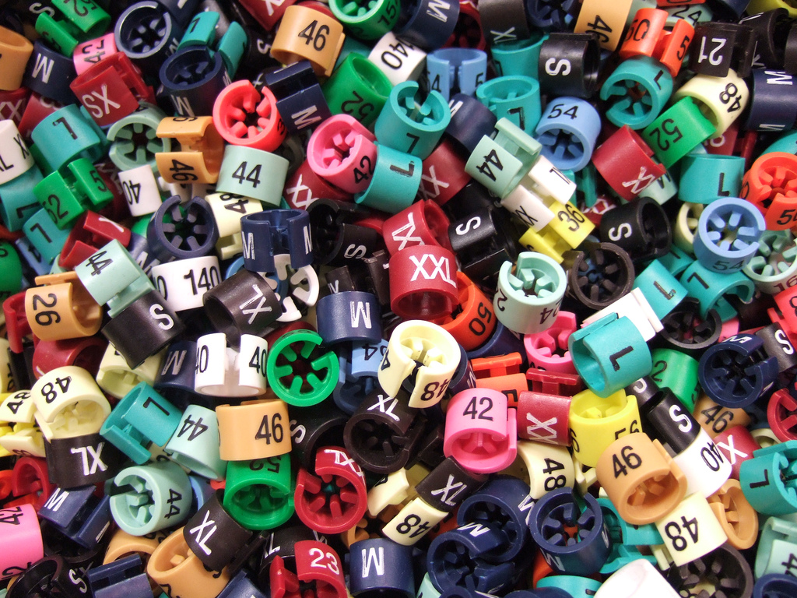

Nós da Enroter focamos na logística reversa de dispositivos eletrônicos tais como:
Notebooks;
Pcs;
Celulares;
Projetores;
Câmeras Fotográficas;
Televisores;
Para realizar a coleta buscamos estreitar a relação entre os consumidores e os produtores de dispositivos eletrônicos que se propõem
a realizar o reaproveitamento ou descarte apropriado. Para tal, criamos uma solução capaz proporcionar esse relacionamento.
As empresas que se propuserem a coletar os dispositivos eletrônicos se cadastram na plataforma informando
seus dados de contato a fim de permitir que o consumidor encontre o local para realizar a devolução desses
dispositivos.
O consumidor também pode efetuar seu próprio cadastro para agendar a coleta dos dispositivos em sua residência, caso
o parceiro possua mecanismos para efetuar coleta residencial.
Dessa forma, acreditamos ser possível diminuir o descarte de materiais nocivos de forma
indevida, prejudicando a fauna e a flora.
Nossa Missão
Nós da Enroter acreditamos que com a participação de todos o mundo se torna um lugar melhor, por isso fazemos
nosso trabalho com todo amor e carinho.
Nós nos comprometemos a unir a lacuna que existe entre as partes que produzem, os consumidores que desejam
retornar seus produtos e as pessoas que veem no retorno de materiais o seu ofício. Dessa forma todos se aliam
para manter o bem-estar do meio ambiente.

Fonte: freeimages.com
O consumidor
Nós, como consumidores, desempenhamos papel central no processo de logística reversa. São responsabilidades
do consumidor:
Prezar pela retenção do material;
Acondicionar o dispositivo em local longe das ações do meio ambiente;
Realizar o retorno à empresa responsável;
As empresas
As empresas vêm sendo cobradas - não só pelas organizações governamentais, mas pelos próprios
consumidores - a assumir um papel mais responsável em relação ao pós-venda de seus produtos.
No quesito de responsabilidades esperados pelas empresas destacamos:
Se prontificar a receber os produtos que necessitam de descarte adequado;
Munir-se de boa vontade no atendimento do cliente;
Realizar o reaproveitamento ou descarte apropriado para cada componente;